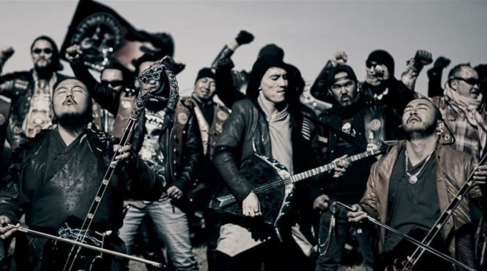
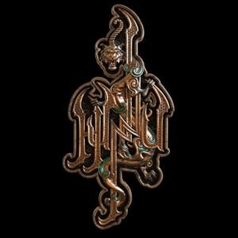

Apesar de las dificultades para encontrar información sobre este grupo, os traemos un artículo sobre el nuevo folk-rock que se está gestando en Asia, en concreto, Mongolia; ese país desértico de grandes planicies que durante la Guerra Fría se mantuvo bajo el designio del comunismo soviético.
|  | La banda nace en noviembre de 2018 y se definen como Rock Huno (Hunnu Rock) en referencia a sus ancestros, los Hunos, aquellos que liderados por Atila asolaron Europa. Por tanto, son un nuevo estilo de rock mongol que viene con mucha fuerza y que prometen un gran trabajo. |
En una entrevista de radio local, el productor de la banda explicó brevemente el concepto y su visión de la banda, que parecen venir definidos por la creación de un nuevo género musical llamado Hunnu Rock y que se apoya en instrumentos tradicionales de Mongolia, voz gutural y una buena base de rock. |
 |
Gabriel Edilberto Ramírez Vázquez Nl: 33